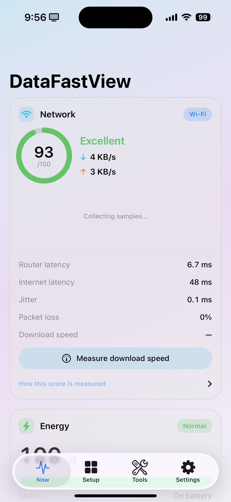
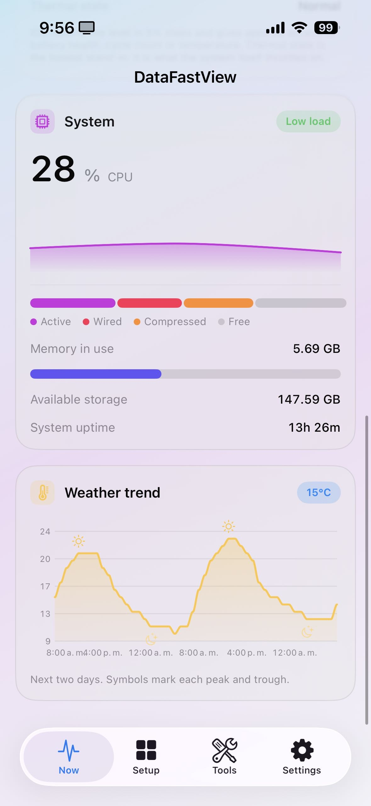
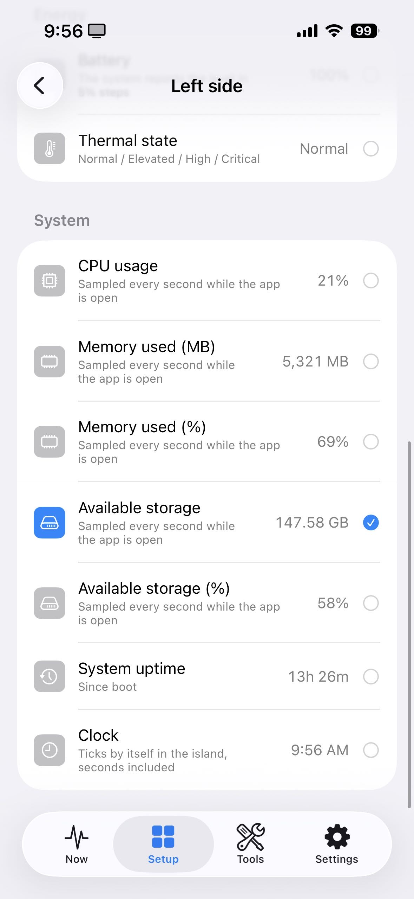
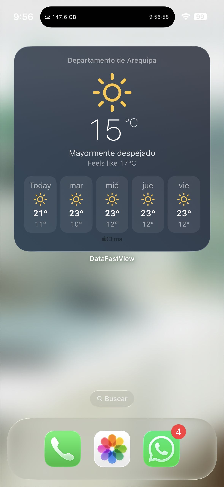
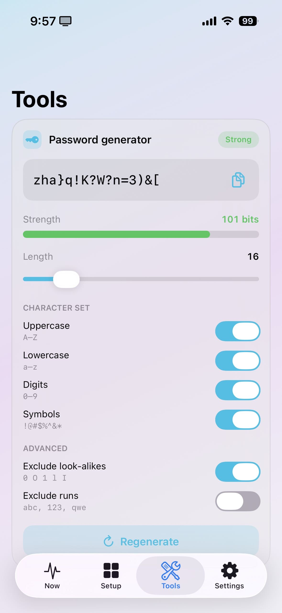

Live Wi-Fi quality, battery, CPU, memory, storage and the weather — in the Dynamic Island, on the Home Screen, and in Control Center. Everything is measured on device and nothing leaves it.

All of it sampled locally, once a second, with the app open — and cached for the widgets when it is not.
A 0–100 score from router latency, internet latency, jitter and packet loss — not the bar count.
Battery level and state, Low Power Mode, thermal state, CPU, memory breakdown, storage and uptime.
Two metrics of your choosing, live, plus rotating Lock Screen phrases.
Launch actions, a storage-and-Wi-Fi widget, and a large weather widget.
Now, feels-like, the next hours and the next days, from Apple Weather.
Strong passwords made on device, with a live entropy readout and a clipboard that expires.
Four tabs. Here is what each one does and exactly how to reach it.
The Network card scores your link from 0 to 100 using four measurements you can read for yourself: round-trip time to your own router, round-trip time to the internet, jitter, and packet loss. Live upload and download rates sit next to the ring. Tap Measure download speed when you want a throughput number too — it is a deliberate action, never a background drain.
Below Network sit Energy — level, charging state, Low Power Mode and thermal state — and System: CPU with a fixed 0–100 % scale, a segmented memory bar (active, wired, compressed, free), free storage and uptime. Under those, a weather trend traces the next 48 hours, with a symbol on every peak and trough.

Pick one metric for the left side of the island and one for the right. Every option shows its live value while you choose, so you are picking from real numbers rather than names. The same tab holds the island's colour, the Home Screen actions and the rotating Lock Screen phrases.

A medium widget of your own launch actions, up to ten in two rows — and you can load a screenshot of your wallpaper so it reads as transparent. A small widget with free space and the last Wi-Fi reading. And a large weather widget: now, feels-like and five days, from Apple Weather.

Choose the length and which character classes to use, then let the generator draw from the system's cryptographic random source. Turn on Exclude look-alikes to drop O 0 I l 1, and Exclude runs to reject abc, 123 and qwe. The strength readout is real entropy in bits, not a mood ring. Nothing is stored, nothing is sent, and the clipboard copy expires.

Buy it once and it is yours, on every iPhone signed in to your Apple Account. There is no subscription, no trial that turns into a bill, and nothing to unlock later.